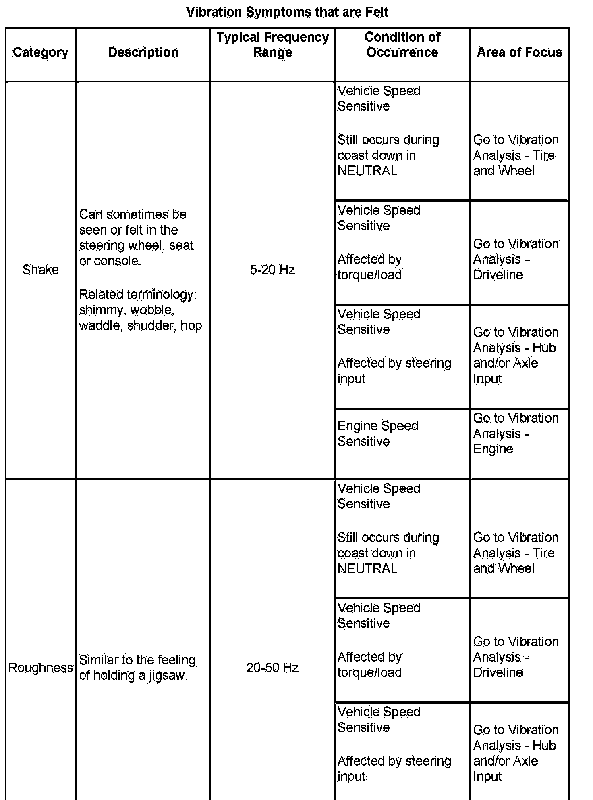
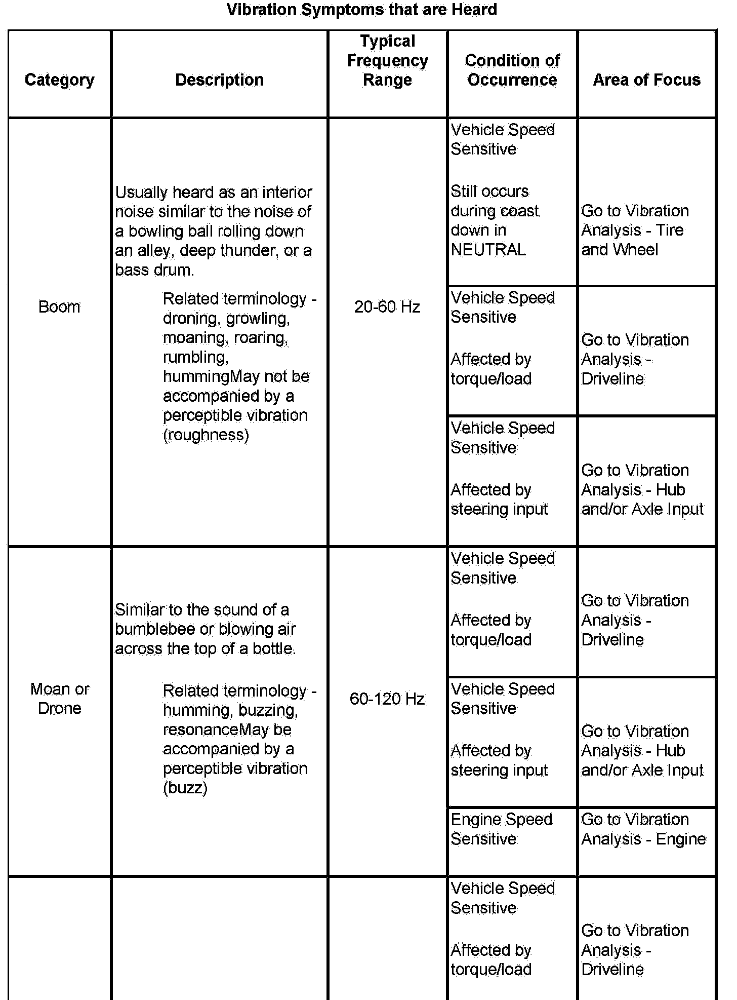
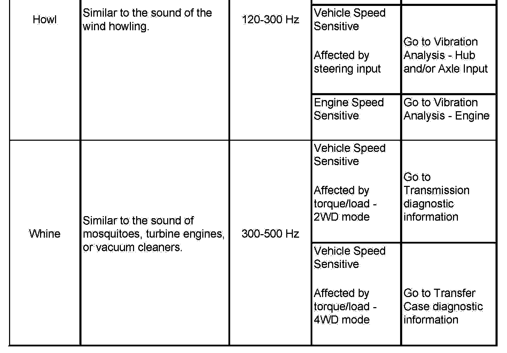

Symptoms - Vibration Diagnosis and Correction
Symptoms - Vibration Diagnosis and Correction
Important: Perform the following steps in sequence BEFORE using these symptom tables.
1. Begin the diagnosis of a vibration concern by reviewing Diagnostic Starting Point - Vibration Diagnosis and Correction to become familiar with the diagnostic process used to properly diagnose vibration concerns.
2. Perform the Vibration Analysis - Road Testing table before using these symptom tables in order to duplicate and effectively diagnose the customer's concern.
Symptom Tables
Refer to a Vibration Analysis table as indicated in the following symptom tables, based on the most dominant characteristic of the customer's vibration concern, felt or heard, that is evident during the appropriate condition of the occurrence.


